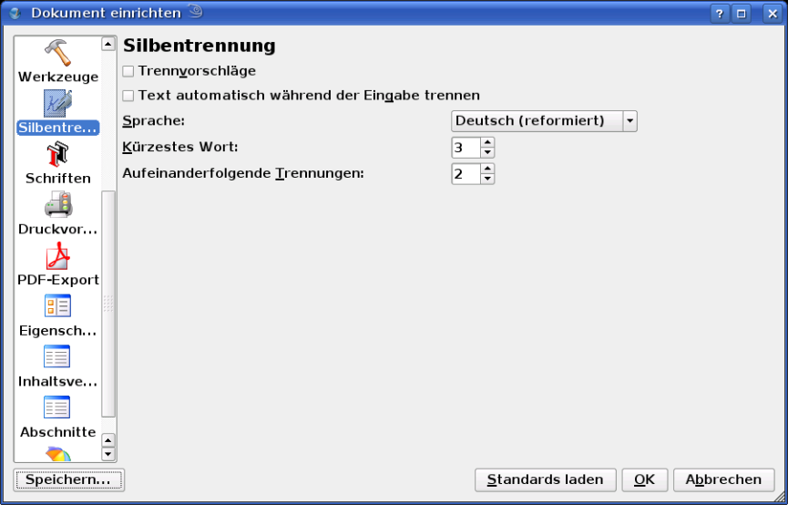

Einer der Gründe für ein häßliches Layout sind Lücken zwischen Wörtern im Text, im Fachjargon auch »Sturzbäche« genannt, die aus nicht angewandter Silbentrennung herrühren. Als Faustregel gilt dabei, daß die Wahrscheinlichkeit für solche Lücken mit der Kürze einer Zeile steigt. Es ist daher dringend zu empfehlen, die Silbentrennung für Fließtext immer durchzuführen, ganz besonders wenn Sie Blocksatz verwenden.
Um die besten Resultate zu erzielen, sollten Sie die Silbentrennung für Ihre Zwecke angemessen konfigurieren. Dies geschieht im Dialog Datei > Dokument einrichten > Silbentrennung für das aktuelle Dokument und Datei > Allgemeine Einstellungen > Silbentrennung für neue Dokumente.
|  |
Der Dialog ist viergeteilt. Im oberen linken Bereich (Allgemeine Optionen) können Sie das allgemeine Verhalten der Silbentrennung festlegen:
Im oberen rechten Bereich finden Sie die wichtigsten typographischen Optionen:
In der unteren Hälfte des Dialogs finden Sie zwei Felder, in denen Sie Besonderheiten eingeben können, die dem Trenn-Algorithmus »entgehen«. Im Feld »Ausnahmen« können Sie Wörter eingeben, die falsch getrennt werden. Im Deutschen können diese beispielsweise vorkommen, wenn in einem Kompositum ein Vorderglied auf b endet und das folgende Glied mit r beginnt. Da viele Wörter im Deutschen mit br beginnen, setzt der Trennalgorithmus die Trennung deshalb u.U. vor das b (Tra-brennen statt Trab-rennen). Auch Namen, besonders nichtdeutsche werden häufig falsch getrennt (Rani-cki statt Ranic-ki). Die richtige Trennung errreichen Sie, indem Sie das Wort in das Feld eintippen und die Trennstelle(n) manuell mit dem Minuszeichen auf der Tastatur eingeben.
Im Feld »Liste der Auslassungen« können Sie Wörter eingeben, von denen Sie möchten, daß sie überhaupt nicht getrennt werden.
Wählen Sie einen Textrahmen, richten Sie den Text wie gewünscht aus, und klicken Sie dann auf Extras > Silbentrennung anwenden im Menü. Beachten Sie, daß auf diese Weise nur der Text im aktuell ausgewählten Rahmen getrennt wird.
Im Extras-Menü finden Sie auch das Gegenstück: Silbentrennung rückgängig machen, mit dem Sie die vorgenommene Trennung eines Textes widerrufen können. Diese Funktion kann auch zu dazu verwendet werden, um die Trennung eines einzelnen Wortes rückgängig zu machen. Wählen Sie dazu das getrennte Wort aus und klicken Sie auf den Menüeintrag.
Es wird immer Fälle geben, in denen der Trennalogorithmus nicht jede mögliche oder sinnvolle Trennung durchführt. In einem solchen Fall können Sie mit Hilfe eines »bedingten Trennzeichens« manuell nachhelfen. »Bedingt« bedeutet, daß Sie dem Programm mitteilen: »Hier trennen, wenn es möglich ist.« »Möglich« ist eine Trennung, wenn sie nicht durch andere Vorgaben (z.B. die Anzahl aufeinanderfolgender Trennungen) verhindert wird. Ein bedingtes Trennzeichen können Sie per Tastatur mit der Kombination Strg+Shift+- oder über den Menupunkt Einfügen > Zeichen > Bedingtes Leerezeichen an der jeweiligen Trennstelle eingeben.